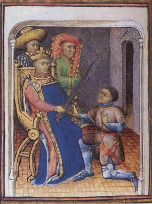
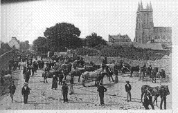
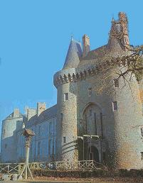
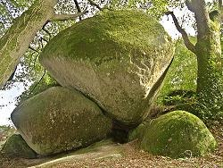

Le vassal de Du Guesclin
Du Guesclin's Vassal
Dialecte de Tréguier (*)
|
Dans ses carnets, LV dit l'avoir rencontré au village de Kerohou, village où la famille Villiers-de-L'isle-Adam possédait un manoir. Ce même Gorvel est désigné comme la source des chants Ceinture de Noces et Ligueurs . F. Gourvil constate (P.357 de son "La Villemarqué") qu'aucun Gorvel n'a fait l'objet d'un acte d'état-civil dans tout le xIXème siècle à Maël-Pestivien. - par de Penguern: t.89, "Ar marc'hadour Rouan" (Taulé, 1851) (=revue "Gwerin", 4); t. 90, 235, "Ar marc'hadour Rouan (Henvic, 1851). - par Madame de Saint-Prix: "Marc'hadour Kerahès" (Ms Landévennec 1, folios 72-74) et t.92, 26 de la collection Penguern : "Marc'hadour Rouan". - par Luzel: manuscrit Ms. 1022,t. 112, "Iannik Pontorson"; "Cwerzioù", 1, "Iannik ar Bon-Garçon" (Plouaret, 1845),. - par Bourgault-Ducoudray, "Trente mélodies populaires de la Basse-Bretagne"): "Iannik ar Bon-Garçon" (Guingamp, 1881). - par J.M. Cadic (dans "Revue de Bretagne et de Vendée", 1891,1), "Yannik er Bon-Garçon. - par F. Cadic (dans "La paroisse bretonne de Paris", avril 1907), "Jannik er 'bon garçon'" (Noyal-Pontivy). - par Guillaume (dans la revue "Dihunamb", 1909), "Iannig er "bon garçon" (Hennebont). - par Pérennes (dans les "Annales de Bretagne", XLVI, 1939): "Gwerz Iannik ar Bon garçon" (La Forêt-Fouesnant). (*) Dialecte: En 1845 le dialecte indiqué était celui de"Léon". Bien que le texte n'ait été à peine modifié, cette indication devient "dialecte de Tréguier" en 1867. Depuis la mise en ligne de 2ème carnet de Keransquer en novembre 2018, on sait que les éléments utilisés par La Villemarqué pour mettre en forme le chant précédent, "La Filleule de Duguesclin" avaient également trait à la prise de Pestivien et non à celle de Trogoff. . |
 'Histoire en prose de Du Guesclin' d'après le poème de Cuvelier - XVème siècle Bibliothèque Sainte-Geneviève, Paris |
In his notebooks, LV writes that he had met him in the village Kerohou, where the Villiers-de-L'isle-Adam owned a manor. The said Gorvel also is the singer of the ballads The Wedding Belt and The League . F. Gourvil states (P.357 of his "La Villemarqué") that no Gorvel was officially registered in Maël-Pestivien during the 19th century. - by de Penguern: t.89, "Ar marc'hadour Rouan" (Taulé, 1851) (=periodical "Gwerin", 4); t. 90, 235, "Ar marc'hadour Rouan (Henvic, 1851). - by Madame de Saint-Prix: "Marc'hadour Kerahès" (Ms Landévennec 1, folios 72-74) and t.92, 26 in the de Penguern collection: "Marc'hadour Rouan". - by Luzel: manuscript Ms. 1022,t. 112, "Iannik Pontorson"; "Cwerzioù", 1, "Iannik ar Bon-Garçon" (Plouaret, 1845),. - by Bourgault-Ducoudray, "Trente mélodies polpulaires de la Basse-Bretagne"): "Iannik ar Bon-Garçon" (Guingamp, 1881). - by J.M. Cadic (in "Revue de Bretagne et de Vendée", 1891,1), "Yannik er Bon-Garçon. - by F. Cadic (in "La paroisse bretonne de Paris", avril 1907), "Jannik er 'bon garçon'" (Noyal-Pontivy). - by Guillaume (in "Dihunamb", 1909), "Iannig er "bon garçon" (Hennebont). - by Pérennes (in "Annales de Bretagne", XLVI, 1939): "Gwerz Iannik ar Bon garçon" (La Forêt-Fouesnant). (*) Dialect: In 1845 the dialect was styled "Léon dialect". Though the text was hardly changed, it became "Tréguier dialect" in 1867. Since Keransquer notebook N° 2 was put online in November 2018, we know that the song fragments used by La Villemarqué to shape the previous "Duguesclin's Godchild" song also related to the capture of Pestivien and not of Trogoff castle. . |
Ton
(Sol majeur)
| Français | English |
|---|---|
|
I
1. Au bois de Maël se dresse Une grande forteresse; De l'eau profonde autour, Aux angles quatre tours. De l'eau profonde autour, O, Aux angles quatre tours. 2. Dans la cour un puits dépasse, Où des ossements s'entassent Chaque nuit le monceau Va de plus en plus haut. 3. Comme sur une corbeille S'y jettent freux et corneilles En quête d'aliments Et croassant gaiement. 4. Si son pont-levis s'abaisse Aisément, il se redresse Encor plus volontiers: On n'en ressort jamais. II 5. Ce sol que l'Anglais piétine Un écuyer y chemine. Ce jeune homme a pour nom Jehan de Pontorson. 6. Passant à la nuit tombante Près des gardes en attente. De leur chef il requit L'asile pour la nuit. 7. - Cavalier, veuillez descendre; Il y a pour vous une chambre Et même une écurie Pour le cheval aussi. 8. Pour lui, du foin et de l'orge De quoi se remplir la gorge. Tandis qu'à table vous Souperez avec nous. 9. Pendant qu'il soupait à table Aucun de ces hommes d'armes N'a guère plus parlé Que s'ils étaient muets. 10. Rompant cette paix pesante, Ils dirent à la servante: - Bigana, fais le lit Du seigneur que voici. 11. Lorsqu'il sent qu'à l'heure on touche D'aller rejoindre sa couche Le jeune cavalier Monte se reposer. 12. Jehan de Pontorson chante En entrant dans la soupente Son cor d'ivoire il mit Sur le banc de son lit. 13. - Bigana, soyez gentille, Dites, pourquoi, jeune fille, Me jeter ces regards Emplis de désespoir? 14. - Si vous saviez ma disgrâce, Si vous occupiez ma place, Vous en feriez autant, Dit-elle en soupirant. 15. Du plus profond de votre âme Vous maudiriez les infâmes Qui sous votre oreiller Ont un poignard caché. 16. La lame est encore humide Du sang de leurs trois victimes. Chevalier vous seriez Le quatrième tué 17. Votre argent, votre équipage, Vos armes et vos bagages, Hormis le cheval bai, Ils ont tout mis sous clé. - 18. Prudemment la main il passe Entre oreiller et paillasse. Un poignard a tiré Rougi de sang tout frais. 19. - Bigana, ma chère amie, Si tu me sauves la vie, Une rente t'est due D'au moins cinq cents écus. 20. - Seigneur, je vous remercie; Non, dites-moi, je vous prie: Êtes-vous marié? Puis-je encore espérer? 21. - Je ne veux tromper personne, O Bigana, ma mignonne, Quinze jours cela fait Que je suis marié. 22. Mais il me reste trois frères Qu'à moi les filles préfèrent. Ton cœur pourrait, je crois, Entre eux faire son choix. 23. - Non, rien ne saurait me plaire, Ni homme, ni bien sur terre. Rien ne plait à mon cœur Que vous, mon beau seigneur. 24. Suivez-moi, car la poterne, Celui qui l'ouvre ou la ferme, Ce soir l'homme du guet, C'est mon frère de lait. - 25. Alors qu'il quittait l'enceinte Le seigneur dans une étreinte L'a prise en croupe et dit: Chère sœur, tu me suis! 26. A Guingamp je veux me rendre Chez mon maître sans attendre. Car je veux savoir si L'on a droit sur ma vie; 27. A Guingamp rendons visite A mon maître et que, bien vite, Le seigneur Du Guesclin Assiège Pestivien! - III 28. - Habitants de cette ville Recevez mes plus civiles Salutations: quelqu'un A-t-il vu Du Guesclin ? 29. - Ce Du Guesclin que tu mandes, Est aujourd'hui, ce me semble, A la Tour Plate dans La salle des barons. - 30. Lorsqu'il entra dans chambre Pontorson sans plus attendre Se frayait un chemin Jusqu'au sieur Du Guesclin. 31. - Dieu vous comble de Sa grâce! Que sa protection vous fasse Le redresseur du mal Fait à votre vassal! 32. - Sa grâce te vienne en aide. Fort adroitement tu plaides: Celui que Dieu soutient Doit protéger les siens. 33. Que faut-il donc que je fasse? Dis-le moi sans longues phrases. - Il me faudrait quelqu'un Qui prenne Pestivien . 34. Les Saxons qui s'y prélassent Oppriment la populace. Ils jouent leurs vilains tours A sept lieues alentour. 35. Le malheureux qui pénètre Au château doit disparaître. Sans l'enfant que voici, Moi-même étais occis. 36. Immolé comme tant d'autres Et ce poignard que j'apporte Est rouge encor du sang De quelque autre innocent. - 37. Du Guesclin alors s'exclame: - Par tous les Saints de Bretagne! Tant qu'il reste un Anglais, Point de droit ni de paix! 38. Qu'on équipe ma monture! Qu'on m'apporte mon armure! Je m'en vais de ce pas Mettre un terme à cela! - IV 39. Le gouverneur de la place Demandait de sa terrasse, Et sur un ton badin Au seigneur Du Guesclin . 40. - Est-ce donc pour quelque fête Qu'on vous voit ici paraître Armés de pied en cap Vous-même et vos soldats? 41. - Oui, l'Anglais, c'est cela même, C'est un bal qui nous amène Mais non point pour danser: Pour vous faire danser! 42. Nous allons jouer un branle Fort long, à ce qui me semble, Quand nous serons bien las Le diable alors jouera. - 43. Au premier choc les murailles Tombèrent. Jusqu'aux entrailles Tout le château trembla Mais ne se rendit pas. 44. Au second assaut cédèrent Trois des tours qui s'écroulèrent Deux cents hommes sont morts Deux cents autres encor. 45. Au troisième assaut les portes Cèdent ouvrant aux cohortes Des fiers Bretons un huis Et le château fut pris. 46. De ce château plus de trace. Pour que le sol ne se tasse, On y passe gaiement La charrue en chantant: 47. "Jean l'Anglais malgré sa hargne Ne vaincra point la Bretagne Tant que les rocs de Maël Pointeront vers le ciel." Traduction Christian Souchon (c) 2008 Italiques: "Fragment D" et passages douteux |
I
1. With four towers in its corners And all round it depthless waters, A stately castle stood Amidst the Maël wood. A stately castle stood, O, Amidst the Maël wood. 2. There was a well in the courtyard Where all sorts of bones were heaped up, And higher grew the mass As night after night passed! 3. The well pole bent under ravens, Dismal birds that filled the heavens. They searched the heap for food, Cawed in a joyful mood! 4. The drawbridge is prompt to lower, But is to rise, alas, faster Whoever it admits Shall never from here quit! II 5. A noble horseman who rode on Through countries held by the Saxon Drew near, a young man styled John Pontorson Esquire. 6. At sunset the fort was in sight And he drew near in the twilight, Asked the man on duty For hospitality. 7. - Now, horseman, no ground for hassle: Dismount, come into the castle. And stable your bay horse You may also, of course. 8. Shall eat its fill in the stable: Hay, barley; while at our table You won't find it unfair With us our meal to share. - 9. While he was sitting at table, These men-at-arms so affable Said no word, they just hummed, As if they had been dumb. 10. The only words that they uttered Were for the maid that they ordered: - Bigana, go upstairs. You shall a bed prepare. - 11. When time came, as he believed. For bedding, he felt relieved, Hurriedly he went up To go to rest at last. 12. John Pontorson he was singing When entering his small lodgings. His horn of ivory He laid on the bed seat: 13. - Bigana, Bigana, dearie, This one thing you ought to tell me Why do you heave such sighs, Look at me with these eyes? 14. - O my handsome lord, if you knew And if at my place it were you, You would sigh just the same And were not to be blamed. 15. Just like me you would be sighing, And would pity me, a poor being: For there is a dagger Stuck under your bolster. 16. There are on it still blood stains From the third man it has slain Alas, my handsome lord, Now you shall be the fourth! 17. Gold, arms, and tatters and rags, And all that was in your bags, All, except your palfrey, Is under lock and key. - 18. He slips his hand and he draws From underneath the pillows The dagger, as she'd said And with blood it was red. 19. - Bigana, avert this knife! I entreat you, save my life! You shall have, of your own, Each year five hundred crowns! 20. - Though I owe you many thanks, Instead of this allowance, Would you like to tell me: Are you wed already? 21. - I won't, Bigana, betray Or cheat you in any way: A fortnight and a day I've been married today. 22. Among three brothers of mine That are better than I am, Say, would your heart rejoice To make, instead, a choice? 23. - Nobody pleases my heart No money you would impart, You are, my handsome lord The one it's longing for. 24. Now lord, you just follow me, A hindrance the bridge won't be Nor the guard on duty: My "milk-brother" is he! - 25. As he rode out of the yard The lord told before the guard: Quick, girl, with me you come! Sister, you'll ride pillion. 26. Let's ride to Guingamp together To my overlord who dwells there I'll know if it was right That I should lose my life. 27. Lord Du Guesclin whom God blesses Such offences, he redresses: He shall, Lord Du Guesclin, Lay siege to Pestivien. - III 28. - O folks of Guingamp , with all due Respect, in God's name I greet you: Lord Du Guesclin , tell me, Is he in the city? 29. - If it is the Lord Du Guesclin For whom, horseman, you are looking, The barons one and all Are in the Flat Tower's hall. - 30. When John Pontorson had entered The hall where they all had gathered, He spied Lord Du Guesclin And he strode straight to him. 31. - My Lord, God be to you gracious! May He back your enterprises! As you protect, yourself, Vassals who need your help. 32. - God be, dear sir, gracious to ye Who know how to speak so fairly. Whoever God protects To help others is next. 33. But what is your request, tell me, In few words explain it clearly. - In short, I want some one To capture Pestivien . 34. The castle is Saxon-ridden They tread down people around them And they cause death and wrong For seven leagues around. 35. Whoever enters the fort They coldly put to the sword. Myself, but for that lass, Like them, away had passed. 36. As so many before me. I would have ceased to be. Look here, with me I bore This knife that's red with gore! - 37. Du Guesclin has exclaimed loudly: - By all saints of Brittany! The Saxons must all go, That we may restore law! 38. Get my horse harnessed! Don't linger! Help me don my suit of armour! At them! At them! At them To this we'll put an end. - IV 39. The commander of the castle Asked from the top of the crenels He asked by way of joke Du Guesclin o'er the moat: 40. - Is it for a fancy dress ball That you're gathering beneath our walls? Harnessed from feet to crown, Why did you leave your town? 41. - You said it, by my faith, my lord, We shall give a ball round this fort. That we will take by storm. The dance you shall perform! - 42. You'll dance while we pipe a brisk song, But as it could be a bit long. When we feel we get tired From Hell pipers we hired. - 43. The walls fell down at the first round The castle shook from top to ground. Eerie was this first blow. The second far more so. 44. For when it came to the next round Three towers have been turned into mounds Two hundred men died and Another two hundred. 45. On the third assault with their ram They have caused the gate to break down. Bretons entered the court: They had captured the fort!. 46. Now that the fort is dismantled, The soil where it stood, well levelled, The man over the field Drives the plough and he sings: 47. "Though John Bull is a mean traitor, In spite of all his endeavours, This shall be Breton land, As long as Maël stones stand." Tranl. Christian Souchon (c) 2008 Italiques: "Fragment D" and dubious stanzas |
Cliquer ici pour lire les textes bretons.
For Breton texts, click here.

|
Résumé
Une seconde aventure de Du Guesclin, collectée par La Villemarqué en 1845: la destruction en 1363 du Château de Pestivien dans le Bois de Coatmaël, tenu par les Anglais, par Du Guesclin venu de Guingamp à la demande d'un certain Jean de Pontorson. Un fait divers "sublimé" en chant historique? Ce chant a également été collecté, entre autres, par F.M. Luzel en 1868 sous le titre: par J.M. de Penguern en 1851, sous le titre: et par Yann Kerhlen , alias Père Jean-Mathurin Cadic (Revue de Bretagne et de Vendée, tome V 1891, p.387) qui en a donné une version vannetaise où "Yannik er Bon-Garçon", venant de Lyon descend dans une auberge de Pontivy et compte revendre à Guéméné les boeufs et chevaux qu'il achète. L'Abbé François Cadic a publié le même chant dans sa revue "La Paroisse bretonne de Paris, avril 1907, en ajoutant deux autres mélodies à celle déjà donnée par son cousin Jean-Mathurin: Petit Jean le Bon Garçon (mélodie version Yann Kerhlen). Jannic le Bon Garçon (3 mélodies version François Cadic).  Jean de Pontorson s'appelle ici Jean le Bon Garçon ("Yannik Ar Bon-garçon", et l'on peut penser que c'est un contresens que retraduire ce nom en "Yannik Ar Paotrig Mad", comme le fait une certaine édition bilingue de chants populaires bretons ). Ce n'est pas un écuyer ("marc'heger", de "marc'h", cheval), mais un "petit" (sans doute par le chiffre d'affaire!) marchand ("marc'hadour" de "marc'had, marché) venu, sauf dans la version Vannetaise, de Rouen (en Normandie comme Pontorson, sauf que cette dernière localité est presque en Bretagne gallaise, dans la baie du Mont Saint Michel) à Carhaix pour la foire aux bestiaux qui se tient à la Toussaint (Foar Gala-goan -Il y avait à Carhaix 2 foires annuelles; la seconde avait lieu à la mi-carème). Ce détail semble situer l'histoire avant la Révolution française. La départementalisation et le retrait à cette ville de ses fonctions administratives et fiscales entraîna le déclin économique de la cité qui conserve cependant encore un marché aux chevaux (cf carte postale ancienne ci-contre). Jean n'est donc pas hébergé à Maël-Pestivien, - ni sans doute à Maël-Carhaix, village trop modeste pour attirer un marchand depuis Rouen -, mais à la grande auberge de Rohan (Ti braz a Rohan) à Carhaix (-Plouguer). Dans la version de Luzel l'auberge en question n'est pas détruite par le justicier de service à la fin de l'histoire. Le sort de la servante (Margodik et non Bigana) qui, après avoir secondé les assassins réintègre "l'axe du bien", est au centre de l'histoire. Mais une ligne de pointillés avant la 4ème partie, l'épilogue (dont il existe deux versions), semble indiquer que le récit est tronqué.Dans certaines versions, le voyageur n'est pas équipé d'un olifant comme dans le Barzhaz, mais d'un fifre d'argent dont il joue devant la servante qui émue le prend en pitié Ou un chant historique "contaminé" par un fait divers? Par ailleurs cette histoire d'aubergistes qui utilisent la complicité d'une servante et dont les agissements sont observés par un beau frère, rappelle étrangement un autre fait qui avait défrayé la chronique judiciaire trente cinq ans avant que le chant breton ne soit collecté par Luzel. Il s'agit du procès de Pierre et Marie Martin et de leur domestique Jean Rochette dit "Fétiche" qui se termina par leur exécution en octobre 1833. Ils étaient accusés d'avoir assassiné entre 1805 et 1830 une cinquantaine de voyageurs à l'Auberge de Peyrebeille , un lieu isolé sur la commune de Lanarce en Ardèche. Le neveu des Martin, André, fut acquitté. C'est le sujet d'un film fameux de Claude Autant-Lara avec Fernandel. L'archétype de ce chant pourrait cependant être bien plus ancien, car il existe un chant québecois, "La servante dénonciatrice" , publié par Conrad Laforte dans "Chansons de facture médiévale", tome 1, page 177, recueilli en 1922 auprès de Mme Octave Dorion, à Port Daniel, dont l'intrigue semble être la même: des aubergistes assassinent et dépouillent leurs clients. Ils sont dénoncés par leur servante qui sera éparnée par la justice. La servante dénonciatrice (source: http://www.rassat.com/textes_74/Yannig.html)
L'écrivain morlaisien Louis Le Guennec (1878-1935) dans "Choses et gens de Basse-Bretagne" (1937) signale que: Il semble que la Comtesse citait, sans le dire, le prêtre Jean-Mathurin Cadic (1843-1917), collecteur de chansons populaires bretonnes tout comme son cousin François Cadic, et ses "Chants et airs traditionnels vannetais" (1891). Le prêtre donnait un autre exemple: "Ou encore, cette auberge de "Troc'h Yalc'h" (coupe bourse) au Ris, près de Douarnenez , où l'on découvrit également des squelettes de soldats de marine…" Quoi qu'il en soit, M. Donatien Laurent , range le chant tel qu'il est présenté par La Villemarqué, parmi les chants historiques authentiques. Rappelons que M. Laurent, à la différence de tous les détracteurs du Barzhaz a (retrouvé et) étudié les carnets de collecte du barde et dispose donc d'éléments lui permettant d'assurer que la ballade collectée par La Villemarqué et par Luzel a bien trait à la destruction par Du Guesclin de la forteresse anglaise de Maël-Pestivien en 1369 [sans doute à rectifier en 1363]. Son point de vue rejoint dès lors celui d'Arbois de Jubainville qui dans la "Revue critique" du 23 novembre 1867, pp. 321-322, observait que les détails de la première partie du chant du Barzhaz se retrouvaient dans la version de Luzel de Yannik le Bon-Garçon. Il n'en tirait aucune conclusion, mais invitait discrètement l'auteur à justifier cette concordance, comme le remarque Francis Gourvil (p. 448 de son "La Villemarqué). Ce dernier croit en outre savoir que l'origine de ce qu'il considère comme une forgerie est à chercher dans "L'Histoire de Bertrand Du Guesclin, comte de Longueville, connétable de France" de Guyard de Berville (1697-1770), 1ère édition : 1767 à Reims, nouvelle édition 1789, t.I, pp. 192-200, où l'on trouve le récit des sièges de Trogoff et de Pestivien, sans doute basé sur celui de Cuvelier . Les fragments du manuscrit de Keransquer L'examen du premier manuscrit de Keransquer montre que pour composer la seconde partie de sa ballade (strophes 25 à 47), La Villemarqué s'est appuyé sur trois fragments repérés A, B et C sur la page bretonne du présent chant. Les strophes 5 à 24 ont leur équivalent dans le "Yannik Ar Bon-Garçon" publié par Luzel et bien d'autres. C'est à ce récit que se rapporte le fragment A, qui relate la fuite du voyageur (baleer) et de la servante, et où l'on trouve 2 strophes que La Villemarqué a laissé de côté: (a) Pour ouvrir la porte à la justice du roi. - La servante Marguerite n'est-elle pas ici? Elle est avec moi sur la croupe de mon cheval. (b) Servante Marguerite, si j'avais su, Tu serais la première personne que j'aurais tuée. Les fragments B et C n'ont pas été recueillis par ailleurs. Ils racontent comment, avec l'aide du seigneur "Gwesklé", Yannik a Benn-ar-zon (dans B) ou Yann eus a Bontorson (dans C), qui doit son salut à une jeune fille (35) se venge des malfaiteurs (gwall dud) qui habitent à Pestivien. L'enchainement entre les 3 fragments semble logique. Les strophes (36): "Sans son obligeance, [je serais mort] comme plus d'un: j'ai ici le poignard. Il est tout rouge, regardez!" et (47) "Quoique Jean l'Anglais soit un méchant traître, il ne nous vaincra pas tant qu'existeront les rochers du bois de Maël" , reproduits en italiques, ont été ajoutés postérieurement par La Villemarqué et constituent un quatrième fragment D . L'examen du graphisme du document, de même que l'étude de la transformation des noms propres, "Gwesklé" (Du Guesclin) et "Pontorson" ont convaincu M. Donatien Laurent, qu'il s'agit bien de chants réellement collectés, appartenant à la tradition orale authentique. L'étude dialectologique montre, en outre, que les fragments C et D ont bien été collectés auprès du nommé Gorvel de Maël-Pestivien en Haute-Cornouaille (à Kerohou). Quant à "Pontorson", on le retrouve sous la forme "chevalier" ("marc'heger") Iannik a Bontorson" dans une version écrite de la propre main de Luzel et consignée dans un cahier conservé à la Bibliothèque de Rennes: MS 1022, p.4, même si le texte publié dans les "Gwerzioù" , tome 1, dont il est dit qu'il fut chanté en 1845 par Marie-Josèphe Kado de Plouaret, identique par ailleurs au manuscrit, met en scène le "marchand ("marc'hadour") "Yannik ar Bon-garçon". Il est impossible de savoir à quel moment Luzel, fervent admirateur de La Villemarqué en 1845, devenu son adversaire en 1867, était sincère. On notera la confusion "marc'heg"/"marc'hadour" dans un autre chant collecté par de Penguern: Itron Ar Faou , où un gentilhomme devient un marchand dans les derniers couplets. Il semble probable qu'on ait affaire à un chant relatif à un événement historique, le siège du château de Pestivien par Duguesclin, avec 6000 hommes, à la demande des habitants, qui s'est transmis depuis mars 1363 jusqu'au 19ème siècle, greffé sur une histoire d'aubergistes assassins, sur les lieux-mêmes où il s'est déroulé. La Villemarqué a fait subir au texte authentique le traitement habituel, atténuant les traits jugés par lui choquants et introduisant des expressions "gothique troubadour" telles que "ma aotrou-reizh" , "mon droit seigneur", (strophe 27) ou "gant neb a zo gwaz gwirion d'eoc'h", "à qui est votre fidèle vassal" (strophe 31). Le point de vue germanique Les auteurs de la version allemande du Barzhaz, Hartmann et Pfau commentent ainsi ce chant et le précédent ( La Filleule de Du Guesclin ): "Les historiens ne connaissent pas cette filleule, mais nous avons pu nous convaincre que les bardes bretons se tiennent toujours au plus près de la vérité et ne travestissent rien de ce qui se rapporte aux grands personnages. Aussi croyons nous à l'existence de cette pauvre filleule et nous expliquons par l'ignorance de la langue et des réalités celtiques où se complaisent les historiens français , que ce genre de chants ne soit pas considéré et utilisé comme une source d'information. Seul Augustin Thierry dont on connaît le génie et le sérieux fait exception à cette règle. L'histoire fait état cependant de la prise du château de Trogoff par Du Guesclin en 1364 et elle connaît un Rogerson, sous le nom de Roger David. De même croyons-nous à l'événement que relate la deuxième ballade, même si l'histoire officielle ignore tout de la prise de Pestivien." (Rappelons que c'est une opinion que leur compatriote Schlegel était loin de partager). A l'appui de ce point de vue, La Villemarqué cite un extrait de la "Chronique de Bertrand Du Guesclin" par Cuvelier , trouvère du 14ème siècle, dans lequel il est question de Du Guesclin et de Pestivien: les bourgeois de Guingamp se plaignent à Du Guesclin : "- Ah! sire Bertrand soyez cent fois béni! Nous avons bien besoin de vous, ce m'est avis: Car il y a châteaux d'Anglais bien remplis Qui tous les soirs s'en viennent jusques à nos courtils. Ils nous vont ravissant vaches, moutons, brebis. Le château de "Pestien" c'est celui qui est le pire... Dolent en est Bertrand quand il les ouït. Quand furent apprêtés à tous il commanda. De Guingamp ils sortirent, sonnant de la trompette. Ils furent bien six mille, bonnes gens, combattant A cheval et à pied, arbalétriers devant." Les roches de Maël qu'évoque la dernière strophe sont, selon le commentaire de La Villemarqué, "toujours debout. Elles dominent l'ancien bois de Coat-Maël et le pays environnant. C'est un amas de pierres énormes superposées dont le temps n'a pu ébranler la masse et dont l'œi s'étonne comme d'une œuvre de géants." (Cf photo ci-après). |
Résumé
A second adventure of Du Guesclin, collected by La Villemarqué in 1845: the destruction in 1363 of Pestivien Castle in the Wood of Coatmaël, occupied by the English, by Du Guesclin who came from Guingamp at the request of a certain John of Pontorson. A trivial event "transfigured" into a historical song? This song was also collected by F.M. Luzel in 1868 under the title: by J.M. de Penguern in 1851, under the title: and by Yann Kerhlen , alias the Rev. Jean-Mathurin Cadic (in Revue de Bretagne et de Vendée, Book V 1891, p.387) who gave a Vannes dialect version featuring "Yannik er Bon-Garçon" who comes from Lyon, alights in an inn at Pontivy and considers reselling at Guéméné the cattle and horses he will buy. The Rev. François Cadic published the same lyrics in his journal "La Paroisse bretonne de Paris", April 1907, with two tunes in addition to that already published by his cousin Jean-Mathurin: Petit Jean le Bon Garçon (tune to Yann Kerhlen's version). Jannic le Bon Garçon (3 melodies published by François Cadic). John of Pontorson is named here John Le Bon-Garçon (Yannick Ar Bongarson -French for "Goodfellow", but it does not mean retranslating it as "Yannik ar Paotrig Mad", as found in a certain bilingual collection of Breton songs). He is not a squire ("marc'heger", from "marc'h", "horse") but more prosaically a "petty merchant" (a "marc'hadour" -from "marc'had, market- whose business is at its very outset).As stated in most versions, except the Vannes dialect one, he has come from Rouen (in Normandy, like Pontorson, but the latter place is situated on the fringe of French speaking Brittany, in the Saint Michel bay) to the Carhaix cattle All Saints' Day fair (Foar Gala-goan; Carhaix had two yearly fairs, the second being the Mid-Lent Fair). This detail could assign these events to a time previous to the French revolution which put an end to its fiscal functions and undermined the economic assets of the city, though it has kept to the present day a yearly horse fair (see picture in opposite column). Thus John was accommodated neither in Maël-Pestivien, nor in Maël-Carhaix, a small village that could not have lured a cattle dealer from Rouen, but at the inn "Rohan Mansion" (Ti Braz a Rohan) in Carhaix-Plouger, as the town is known nowadays. In Luzel's narrative, the inn is not destroyed by the dispenser of justice on duty, whereas the maid (Maggie, not Bigana), who was a confederate to the murderers but eventually rallies to the "axis of virtue" is the pivotal character. However a raw of suspension points before the epilogue hints at possible drastic curtailing of the story. In some versions, the traveller does not lay off an ivory horn, as he does in the Barzhaz, but he plays a silver flute before the maid who is moved by the tune and pities him. Or a genuine historic feat "degraded" to a trivial event?  On the other hand this story of innkeepers who with the help of their maid and the knowledge of a brother-in-law rob and kill their customers, resembles suspiciously a criminal case that was widely talked about, thirty-five years before the Breton song was collected by Luzel, to wit the trial of Pierre and Marie Martin and their manservant Jean Rochette, alias "Fetish". It ended with their beheading on October 1833. They were indicted for having killed travellers, between 1805 and 1830, at their Inn of Peyrebeille , a lonely house at Lanarce on the Ardeche plateau, and there were a good fifty of them! Their nephew, André, was acquitted. It was the theme for a famous film with the no less famous actor Fernandel, made by Claude Autant-Lara.The archetype of this song could be much older, since there is a Quebec song titled, "The exposing maid" , published by Conrad Laforte in "Chansons de facture médiévale" (Old-made songs), Book 1, page 177, collected in 1922 from the singing of Mme Octave Dorion, living at Port Daniel, whose plot appears to be the same: inn keepers murder and despoil their guests of their possessions.They are denounced by their maid who will therefore escape punition. The exposihg maid (source: http://www.rassat.com/textes_74/Yannig.html)
The Morlaix born writer Louis Le Guennec (1878-1935) in "Things and People of Lower Brittany (1937) states that I understand thet the Countess quoted, in turn, 'The Vannes traditional songs and airs" (1891) by the Reverend Jean-Mathurin Cadic (1843-1917), a collector of Breton folk songs, like his cousin François Cadic. The priest gave another instance of "bloody inn": "The Inn held by "Troc'h yalc'h" (pursecutters) at Ris near Douarnenez where skeletons of seamen were also discovered..." Whatever may be the doubts expressed, Mr Donatien Laurent , considers this ballad an authentic historical song. As we know, Mr Laurent has retrieved and investigated the collection books of La Villemarqué. Unlike the Bard's disparagers he avails himself of elements enabling him to assert that the ballads collected by both folklorists do recount the destruction of Maël-Pestivien English Castle by Du Guesclin in 1369 [to be amended to 1363]. His point of view converges therefore with Arbois de Jubainville's who in the 23rd November 1867 issue of "Revue critique", pp. 321-322, remarked that particulars of the first part of the Barzhaz song were included in Luzel's "Yannik le Bon-Garçon". He did not draw therefrom any conclusion, and contented himself with prompting the author to explain this similarity, as stated by Francis Gourvil (p.448 of his "La Villemarqué). Besides, Gourvil claims to know that the source of what he considers another forgery is the "History of Bertrand Du Guesclin, count of Longueville, constable of France" by Guyard de Berville (1697-1770), 1st edition, 1767 in Reims, new edition 1789, t.I, pp. 192-200, where we find narratives of the sieges of Trogoff and Pestivien, (presumably founded on the poem by Cuvelier ). The fragments of ballad in the Keransquer MS A close examination of the first Keransquer MS shows that Lavillemarqué availed himself of three fragments, referred to as A, B and C on the Breton page dedicated this song, to compose the second part of the ballad (stanzas 25 with 47). Stanzas 5 to 24 may be paralleled with stanzas of the "Yannik Ar Bon-Garçon" published by Luzel, among many others. With the same story is connected the fragment A relating the escape of the wanderer (baleer) with the maid, containing 2 stanzas left out by La Villemarqué: (a) ... to open the door to the king's constables. - Is the maid Margaret not here? She is with me, riding pillion on my horse (b) Maid Margaret if I had known You'd have been the first one I'd slain. Fragments B and C were recorded nowhere else. They recount, how, with the help of Sir "Gweskle", Yannik a Benn-Ar-Zon (in fragment B) or Yann eus-a Bontorson (in fragment C), who was saved by a young girl (35), takes revenge on criminals (gwall dud) who dwell at Pestivien castle. The three fragments are logically linked together. The two stanzas (36): "Without her solicitude [I would have perished] like so many: here is the bloodstained dagger, look!" and (47): "Although John the Englishman is a vile traitor, he won't conquer us as long as the boulders in the Maël woods remain piled up." (printed in italics), were added by La Villemarqué to his previous notes. They may be regarded as a fourth fragment D . Scrutinizing the diverse handwritings on this document and the changes in the spelling of the names, "Gweskle" (Du Gesclin) and "Pontorson" has persuaded M. Donatien Laurent, that these fragments are pieces of genuine oral tradition that were really collected. The analysis of the dialect in use proves, moreover, that stanzas C and D were gathered from the singing of the Upper-Cornouaille dialect speaking peasant Gorvel, near Maël-Pestivien (Kerohou). As for "Pontorson" his name appears as "Marc'heger (knight) Iannik a Bontorson" in a handwritten version by Luzel, kept in the Rennes City Library under shelf-mark MS 1022, p.4.But the song published in the Gwerzioù" , book 1, allegedly sung by Marie-Josèphe Kado from Plouaret, though identical with the MS, features a "marc'hadour (merchant) Yannik ar Bon-Garçon". It is impossible to decide when Luzel was sincere: in 1845, when he was a fervent admirer of La Villemarqué, or in 1867 when he had become his antagonist? "Marc'hadour" is also mistaken for "marc'heg" in a song collected by De Penguern: Itron Ar Faou , where a nobleman becomes a merchant in the last stanzas. It is likely that this is a song relating to a historical event, the siege of Pestivien castle laid by 6000 men under Du Guesclin, at the request of the neighbouring inhabitants. The memory of it survived from March 1363 to the 19th century, in the very area where it occurred, in a ballad grafted onto a story of murdering inn keepers. La Villemarqué subjected the original tale to the trimming he used to impose on his collected stuff, toning down the most salient features, lest they would be deemed shocking, or introducing pseudo-medieval phrases like "ma aotrou-reizh", "my righteous lord", (stanza 27) or "gant neb a zo gwaz gwirion d'eoc'h", "to whoever is your trusty vassal" (strophe 31). The German point of view Here is the comment made by the German translators of the Barzhaz, Hartmann and Pfau about this song and the previous one, Duguesclin's Godchild : "Historians know not of this godchild, but we have oft enough satisfied ourselves that Breton bards always stick to historic truth and never misrepresent well-known personages. Therefore, we believe that this hapless godchild did exist and we explain by the French historians' purposeful ignorance of the Celtic language and culture , that this kind of songs never was considered or used by them as a source of information. Only Augustin Thierry , with his outstanding seriousness and talent, is an exception to this rule. However, history does mention the seizure of Trogoff castle by Du Guesclin in 1364 and it knows of a Rogerson, under the name of Roger David. In the same way, we believe in the event reported by the second ballad, even if official history tells us nothing about the capture of Pestivien Castle." ( Let us recall that their fellow countryman Schlegel did by no means share their opinion). That the song told the truth was also the opinion of La Villemarqué who quotes an excerpt from the " Chronicle of Bertrand Du Guesclin" by Cuvelier , a 14th century trouvère. It is about the famous Constable and Pestivien: the burgesses of Guingamp complain to Du Guesclin: " - Alas, Sir Bertrand be blessed a hundred times! For we need urgently your assistance, I'm sure. So many castles are still held by the English Who break every night into our farmyards And they rob our cattle and our sheep and our ewes. By those in Pestivien Castle most harm is done... Sorry was Bertrand when he heard their grievance. When they all were ready he took command of them. And they left from Guingamp, their horns sounding clearly; A good six thousand of them, hardy yeomen On foot or on horse, with crossbowmen in the van." The Maël Boulders mentioned in the last verse are, so says La Villemarqué in his comment, "still staying. They overlook the old Coat-Maël wood and the surrounding land. They are a dump of enormous piled up boulders that could stand the assaults of time, whereon our eye dwells, as if they had been wrought by some gigantic artist." (See picture below). |
